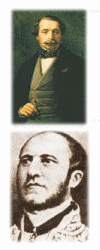

Historia de París
El París que admiramos hoy es el producto de una rica historia, caracterizada especialmente por sucesiones de monarcas que plasmaron su ego construyendo enormes palacios, catedrales y jardines espectaculares, así como también por personajes preocupados por la cultura que desarrollaron las universidades y los artistas e intelectuales que dejaron su huella indeleble en cada uno de los barrios de Paris. He aquí una breve reseña de la historia de esta increible ciudad.
Los Orígenes
Al parecer los primeros pobladores fueron una tribu celta que se asentó en el siglo III a.c. en las actuales islas de la Cité y Saint-Louis: los parisii. Estas islas les proporcionaban subsistencia y una defensa natural contra agresiones externas. La vida de este grupo, conocido por las monedas de oro que acuñaban, llegó a su fin cuando los romanos decidieron ir a la Galia y ocuparon su ciudad, la Lucoticia.
Los parisii resistieron la invasión romana, pero fueron derrotados. Seguidamente, los romanos reconstruyeron Lucoticia, llamándola Lutecia. Levantaron murallas, un gran palacio (actual Palais de Justice), un circo (Arenas) y termas (Cluny), extendiéndose a la ribera izquierda del Sena, lo cual hace pensar en la importancia de esta ciudad para los romanos.
Ya en épocas de decadencia romana, hacia el siglo III, los bárbaros comenzaron a ocupar sus territorios. Juliano se estableció en Lutecia para controlar su avance, pero sus principales ocupaciones eran el ocio y la diversión. Cuando los hunos, en el siglo V bajo el mando de Atila, avanzaron desde el norte, los habitantes de Lutecia iniciaron la retirada a tiempo. Fue cuando Santa Genoveva les pidió que rueguen protección a Dios. Atila pasó de largo, y es así como Santa Genoveva , con el tiempo, fue declarada santa patrona de París.
La época medieval
Con la llegada al trono galo del franco Clodoveo finaliza el período romano. Clodoveo se convirtió al catolicismo en el 493. En el 508 estableció Paris como capital y el país adoptó el nombre de Francia.
Siguió el período llamado de "los reyes holgazanes", que no dejó obras muy significativas y perdurables, y la caida del sistema político.
En el año 768, subió al trono Pipino el breve, que al morir divide el reino entre sus dos hijos: Carlomán y Carlomagno. A la muerte del primero, Carlomagno se proclamó rey único.
Tras los ataques normandos del siglo IX, la ciudad, pese a su resistencia, quedó muy deteriorada y la ribera izquierda fue arrasada, por lo cual sus habitantes debieron refugiarse nuevamente dentro de la isla de la Cité.
En el año 965, llegó al trono Hugo Capeto (llamado así debido a la gran capa que solía usar). La ciudad comenzó a recuperar su esplendor, se extendió a la orilla derecha, y los bateleros organizaron una corporación que tenía una embarcación en su escudo y por lema "Fluctuat nec mergitur" (algo así como "a flote, sin hundirse jamás"), que más tarde sería emblema de París.
Entre las obras más significativas de este período, podemos citar el comienzo de la construcción de la catedral de Notre Dame, la Sainte Chapelle, la construcción de obras para suministro de agua potable, y bajo el reinado de Felipe Augusto, una gran muralla rodeando la ciudad. Pero lo más importante fue la creación de la primera universidad, lo cual transformó a la ciudad en el principal centro cultural del mundo. En el año 1257, se fundó la Sorbona.
Siguieron años de persecuciones religiosas e intrigas políticas por la sucesión al trono de Francia que desencadenaron la Guerra de los Cien Años contra los ingleses. Carlos V el Sabio se asentó en el poder y comenzó la construcción de la Bastilla y el Châtelet. Se estableció en el Louvre, adonde trasladó su colección de casi mil manuscritos.
Llegó la ocupación de París por parte de los ingleses, que no fue recuperada sino hasta 1437, y la llegada de Carlos VII al trono. Con su hijo, Luis XI, finalizó la guerra y su principal ocupación fue el desarrollo de las artes y la instalación de la primera imprenta en la Sorbona.
La Epoca Moderna
En 1515, llega al trono Francisco I, ilustrado y amante de la buena vida. Enfrentado a Carlos I de España, durante una batalla es tomado prisionero. El pueblo parisino pagó su rescate y se dice que en agradecimiento agrandó y embelleció el Louvre. También reconstruyó el Hotel de Ville y fundó el Colegio de Francia. Al fallecer le sucedió su hijo Enrique II que murió en un torneo en la plaza des Vosges, en el Marais.
Su sucesión, al ser sus hijos muy pequeños, trajo aparejados numerosos enfrentamientos por diferencias religiosas entre los aspirantes, y dejaron a la ciudad malherida y hambrienta. Así que finalmente el pueblo parisino reconoció a Enrique IV como rey, quien emprendió la tarea de reconstrucción, con la ayuda de Sully y Miron. Se finaliza el Pont Neuf, se construyen plazas, como la des Vosges, se amplían el Louvre y las Tullerias.
Asesinado en 1610, Enrique IV es sucedido por su esposa María de Médicis (su hijo es muy pequeño), quien construye el Palacio de Luxemburgo, rodeado de los famosos jardines. Cuando su hijo Luis XIII llega al trono, asesorado por Richelieu, la monarquía fue fortalecida, desplazando las ambiciones de ascenso de la nobleza, y París siguió su crecimiento, aunque el pueblo estaba cansado del despotismo y la miseria.
Cuando muere Luis XIII, Luis XIV tiene 5 años. Los nuevos problemas de sucesión, sumados al descontento del pueblo y las ambiciones de los nobles dieron lugar a revueltas. Pero el poder siguió bajo control real.
Con las maniobras de Richelieu y Mazarino, Luis XIV, envuelto en aires de grandeza, manejó el país a su antojo. Reformó el Louvre, pero, no satisfecho, mudó toda la corte al palacio de Versalles, que hizo construir especialmente. Mandó limpiar las calles de mendigos y maleantes, construyó las plazas de Victoire y Vendôme, creó un asilo para heridos de guerra -Los Invalidos- y un observatorio. Su reinado fue el más largo de la Edad Moderna (72 años, desde 1643 a 1715).
Le sucedió su bisnieto, Luis XV. Durante su reinado, se construyó la Place de la Concorde, el Panteón y la Escuela Militar. Estos años fueron los del "Siglo de las Luces"; los filósofos (Montesquieu, Voltaire, Rousseau, Diderot, entre otros) sembraban ya el germen de la revolución.
La Epoca Contemporánea
El 5 de mayo de 1789, se reunió el Consejo General: el rey, el clero y la aristocracia por un lado, la clase media y los profesionales por el otro. Luis XV intentó conservar el poder, pero por fin el 14 de julio el pueblo amotinado tomó la Bastilla. La familia real debió dejar Versalles para ir a las Tullerías, esperando las medidas que tomaría el pueblo. Quisieron escapar en 1791, pero fueron detenidos en Varennes. En 1793, Luis XVI y la reina fueron guillotinados en la place de la Concorde. París vive los llamados "años del terror", bajo la dictadura de Robespierre, cuando todos los opositores a la revolución perdieron la cabeza, literalmente.
En 1793, ante el avance de los ingleses por el norte, aparece en escena un coronel de carrera ascendente: Napoleón Bonaparte. Robespierre muere en la guillotina en 1794, pero la revolución no termina. En 1795, los ánimos se calman con la creación de un Directorio. Después de sus campañas militares en Italia y Egipto, Napoleón, bien visto por el Directorio, vuelve a Francia, da un golpe de estado, establece un consulado y se proclama cónsul. Se instaló en las Tullerías y se ocupó de la ciudad, muy deteriorada después de la revolución, que destruyó buena parte de los edificios reales y catedrales. El pueblo estaba sumido en la miseria y París contaba ya alrededor de medio millón de habitantes. En 1804 se proclamó emperador en Notre Dame, lo cual puede considerarse como el fin de la revolución.
Napoleón quería hacer de París la ciudad más bella del mundo: construyó el Arco de Triunfo, el Arco del Carrousel, la iglesia de la Madelaine, el Palacio de la Bolsa...Sus posteriores fracasos en Rusia y España acabaron con su gobierno, y la ciudad se vio otra vez invadida por ingleses, prusianos y rusos.
Luis XIII intentó recuperar el poder. En 1824 puso a su hermano Carlos X al trono, quien ante el descontento popular debió abdicar, cediendo el lugar a Luis Felipe. Durante su reinado se inauguró la primera línea de ferrocarril, pero no se preocupó mucho de su pueblo, lo que relató Víctor Hugo en sus novelas, y en especial en Los Miserables.

Por ello, Luis Felipe debió abdicar y así llegó al poder Napoleón III. Este decidió modernizar la ciudad y convocó para ello al barón Haussmann, una de las personas que más huella dejó en París. Se derribaron barrios insalubres (como los medievales que estaban frente a Notre Dame), se construyeron grandes boulevards, entre ellos los famosísimos Campos Eliseos, se levantó el mercado de Les Halles y la Opera Garnier. Se anexaron barrios de los alrededores, como La Villete y Montmartre y las calles se iluminaron con treinta mil farolas a gas. El París que vemos hoy se debe en buena parte al trabajo de Napoleón y Haussmann.
La ciudad sumaba en esos tiempos un millón de habitantes, debido al éxodo rural y la incorporación de ciudades vecinas.
Pero pese a todo ese brillo, el pueblo sufría de jornadas laborales de 17 horas, entre otras injusticias. Así que al grito de "Abajo el Imperio, arriba la República" se sublevaron tomando las Tullerías. Los prusianos, a quienes Napoleón III había declarado la guerra, aprovecharon la situación y asediaron París. El pueblo, deseperado por el hambre, capituló. Llega al gobierno republicano Louis Adolphe Thiers.
Sigue el descontento, y en 1871 se funda una Comuna compuesta por distintas corrientes ideológicas. El gobierno republicano se refugia en Versalles, pero comienza la represión de los "communards". El Muro de los Federados en el cementerio Pere Lachaise rinde homenaje a los caidos durante estos sucesos. En plena guerra civil, se incendian el Palacio de las Tullerías y el Hôtel de Ville. La Comuna sólo duró once semanas.
Después de tanta lucha civil y miseria, los políticos comenzaron a pensar un poco en los más desfavorecidos y en recuperar la ciudad.
El siglo XX
El año 1900 llega con la famosa Exposición Universal y la torre Eiffel. Siguieron el primer metro y la iluminación eléctrica en las calles. Paris fue también la ciudad organizadora de los Juegos Olímpicos de 1900 y en 1924. Los años de la Belle Epoque. La incorporación de ciudades próximas elevaba la población a casi tres millones de habitantes.
En 1910, una crecida del Sena provocó una de las peores inundaciones de la ciudad.
La Primera Guerra Mundial no afectó demasiado a la ciudad, aunque fue bombardeada, y los años que siguieron vieron el desarrollo de las diferentes ramas del arte en todo su esplendor, así como la agitación política y de las clases trabajadoras exigiendo reformas laborales. La ciudad seguía creciendo al tiempo que se hacían necesarias viviendas para la clase obrera.
En 1919, se inaugura la primera línea aérea comercial, que unía París y Londres.
Durante la Segunda Guerra Mundial, París fue ocupada por los alemanes, en 1940. Sus habitantes judíos sufrieron la masacre. Con la llegada del general Leclerc, el 25 de agosto de 1944, el comandante de la guarnición, el general Dietrich von Choltitz capituló sin ejecutar las órdenes de Hitler que le exigían destruir la ciudad.
A partir de estos momentos, se produjo un fenómeno de regresión demográfica, debido en parte a las guerras, a la fuerte caida de la natalidad, y a que la ciudad ya no tenía capacidad para albergar tanta gente, la cual se dispersó en los alrededores.
En 1947, Christian Dior organiza por primera vez un desfile de modelos.
La post-guerra fue para París uno de sus mejores momentos; tiempos de pensadores como Sartre, Simone de Beauvoir, Prevert, etc, sentados en los cafés, como los famosos Cafe des Magot y Cafe de Flore, discutiendo sus ideas. Así, en mayo de 1968, estudiantes y obreros se rebelaron contra los poderes establecidos y Charles de Gaulle debió renunciar. En 1976, el Estado acordó por primera vez una municipalidad autónoma a la capital. Jacques Chirac fue elegido alcalde de París. Fue reemplazado en 1995 por Jean Tiberi y en 2001, por Bertrand Delanoë. Bertrand Delanoë se destacó sobre todo por su voluntad de reducir el espacio de los automóviles en la capital en favor de transportes comunitarios y taxis.
George Pompidou, sucesor de de Gaulle, fue un hombre preocupado por la cultura; en 1977, 3 años después de su muerte, se fundó el centro Pompidou, cuya construcción había emprendido con no pocas polémicas en el corazón de la ciudad. Los presidentes que siguieron, Giscard d'Estaing y François Miterrand, siguieron contribuyendo a enaltecer París y su patrimonio arquitectónico. Así, en 1986 se inauguró el museo de Orsay, y en el año 1989, en el marco del segundo bicentenario de la revolución, se inauguraron obras como el Grand Louvre, la Opera-Bastilla y el Grande Arche de la Defense. En 1996, Chirac, electo presidente el año anterior, inauguró la Biblioteca Nacional de Francia, el último de los "Grandes Trabajos" iniciados por el presidente Miterrand, que falleció ese mismo año.